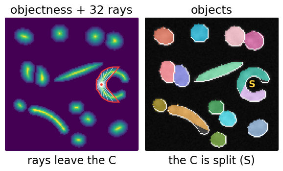
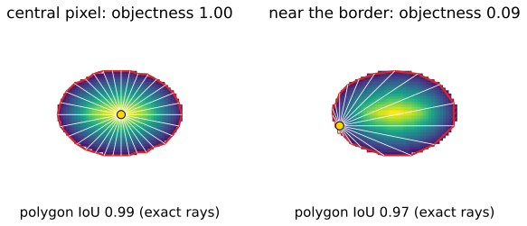
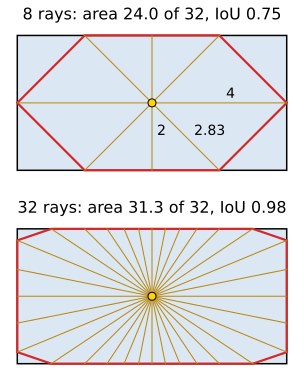
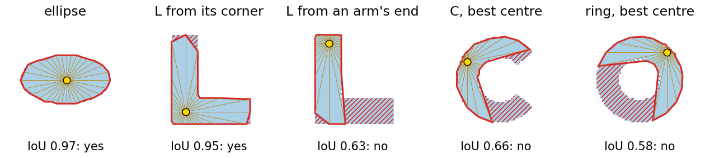
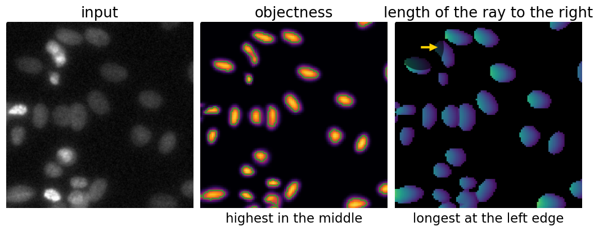
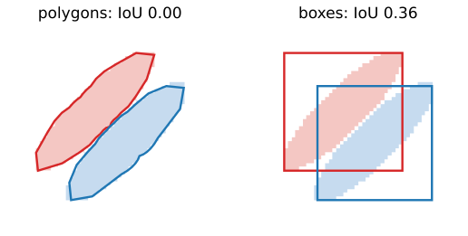
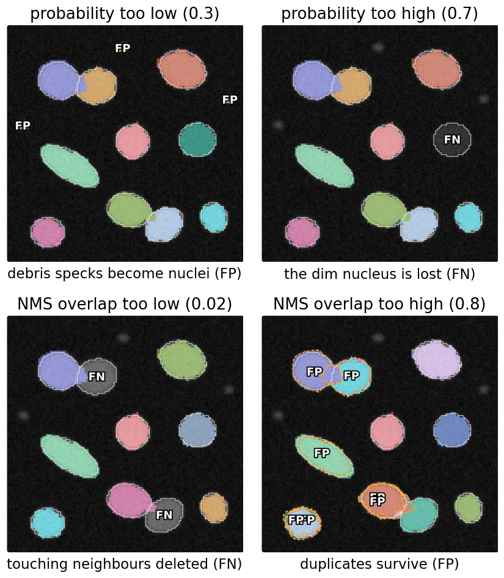
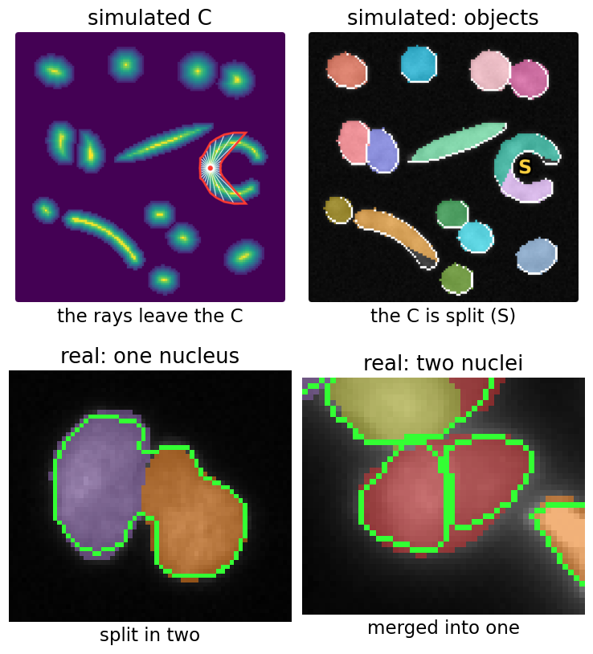
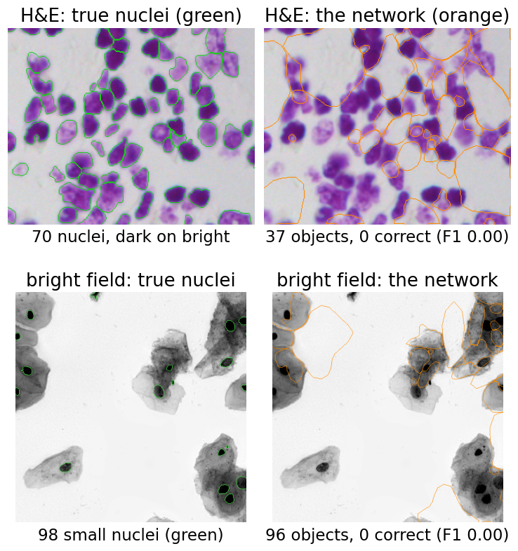

Star-convex polygons
About this lecture
How does one pixel describe a whole nucleus, and how do 100 000 pixel guesses become 120 nuclei?
- What the network predicts per pixel: an objectness and 32 ray lengths.
- From rays to a polygon, and which shapes a polygon from one point can describe (star-convex shapes).
- Decoding: a probability threshold, then polygon non-maximum suppression.
- The two thresholds, why touching nuclei separate, and the failures built into the method.
- The real network, running in your browser.
Slides titled The math give the formulas and proofs; the ideas are complete without them.
Recall: from a mask to nuclei
From the previous day: a network that gives a class per pixel merges touching nuclei. So instance methods let the network predict a map that makes separation easy, and a classical step turns that map into objects.
Route 3 of that unit: every pixel proposes a polygon for “its” nucleus, and suppression keeps one per nucleus.
Today, the details:
- what exactly the pixel predicts,
- how the polygons are pruned,
- and what goes wrong, and why.

What the network predicts
For each pixel (in practice on a coarser grid: one value per 2 × 2 pixels) the network outputs 33 numbers:
- an objectness: how central the pixel is in its nucleus (1 at the centre, near 0 at the border, 0 outside);
- 32 distances, one along each of 32 fixed directions (every 11.25°), to the border of the nucleus the pixel belongs to.

The network itself is a U-Net (the neural networks day) with 1 + 32 output channels instead of one.
The math: star-convex sets
Object O \subset \mathbb R^2, point c \in O, unit vector \mathbf u(\theta) = (\cos\theta, \sin\theta).
- O is star-convex with respect to c if the segment from c to every p \in O lies in O.
- Radial function: r(\theta) = \sup\{r \ge 0 : c + s\,\mathbf u(\theta) \in O \ \forall s \in [0, r]\}, the distance to the first exit.
- If O is star-convex w.r.t. c, then O = \{c + s\,\mathbf u(\theta) : 0 \le s \le r(\theta)\} (up to its boundary): the function r describes O exactly.
- If not, some ray leaves O and enters it again. Its intersection with O is not one interval, and no single number per direction can describe it.
- Every convex set is star-convex w.r.t. each of its points. The network samples r at \theta_k = 2\pi k/n, n = 32.
From rays to a polygon
Join the tips of the rays in order: a polygon with n corners.
Worked example: a rectangle 8 × 4 seen from its centre, 8 rays every 45°:
- lengths 4, 2.83, 2, 2.83, 4, 2.83, 2, 2.83;
- polygon area 24.0 of 32: IoU 0.75;
- the lost area is the 4 corners, 2.0 each (the corners lie between rays).
With 32 rays: area 31.3, IoU 0.98. More rays, finer outlines; 32 is enough for round nuclei.

The math: polygon area from the rays
The polygon is a fan of n triangles at the centre, each with angle \alpha = 2\pi/n between rays k and k+1:
A = \sum_{k=0}^{n-1} \tfrac12\, r_k\, r_{k+1}\,\sin\alpha = \tfrac12 \sin\tfrac{2\pi}{n}\sum_{k} r_k r_{k+1} \qquad (r_n = r_0).
- Rectangle 8 × 4, n = 8: \tfrac12 \sin 45° \cdot (4 \cdot 2.83 + 2.83 \cdot 2 + \dots) = 0.354 \cdot 67.9 = 24.0.
- Disc of radius R from its centre: A = \tfrac n2 R^2\sin\tfrac{2\pi}{n}, a fraction \tfrac{n}{2\pi}\sin\tfrac{2\pi}{n} of \pi R^2: 0.900 (n = 8), 0.994 (n = 32); the error falls like 1/n^2 since \sin x \approx x - x^3/6.
- Ellipse with semi-axes 6 and 3 from its centre, r(\theta) = ab/\sqrt{b^2\cos^2\theta + a^2\sin^2\theta}: 85.4 % (n = 8), 95.5 % (16), 98.8 % (32).
Which shapes fit?
A shape is star-convex if one point sees its whole border along straight lines. Then the rays from that point describe it.

- Discs, ellipses, most nuclei: yes, from almost any inner point.
- An L: yes from its corner, no from the end of an arm. The centre matters.
- A C, a ring, a bent rod: no point works. The polygon misses a part of the shape, whatever the network learns.
Try it: rays and polygons
Why rank by objectness?
Every pixel inside a nucleus proposes a polygon. A central pixel sees its nucleus evenly; a border pixel sees it lopsidedly (a few long rays cross the whole nucleus, the far side gets few rays, and long rays are the hardest to predict). So each proposal is scored by “how central am I”: the distance to the background, divided by its maximum in each nucleus. That is the distance map of the watershed day, normalised per nucleus.

The math: training targets and loss
For a training image with true objects O_1, O_2, \dots and a pixel p \in O_j:
- objectness target d(p) = \dfrac{\operatorname{dist}(p, \mathbb R^2 \setminus O_j)}{\max_{q \in O_j}\operatorname{dist}(q, \mathbb R^2 \setminus O_j)} \in (0, 1], and d(p) = 0 in the background;
- ray targets r_k(p) = distance from p to the first point outside O_j along \mathbf u_k (other objects count as outside);
- loss per pixel: binary cross-entropy between d(p) and the predicted \hat d(p), plus an objectness-weighted absolute error on the rays: \mathcal L = \sum_p \mathrm{BCE}\big(d(p), \hat d(p)\big) + \lambda \sum_p d(p)\,\frac1n\sum_k \big|r_k(p) - \hat r_k(p)\big|.
- Central pixels weigh most in the ray loss. These are the pixels whose polygons decoding will use.
Decoding: from candidates to objects
- Keep the grid cells with objectness above the probability threshold.
- Each one gives its polygon: the candidates.
- Sort them by objectness.
- Polygon NMS: keep the best, delete every polygon that overlaps it by more than the NMS threshold (IoU of polygons), repeat.
- Paint the kept polygons into a label image, best last, so the better one wins where two overlap.
On the micrograph: 512 × 512 pixels, 256 × 256 grid cells, 4737 candidates → 121 nuclei.

The math: the cost of polygon NMS
- Greedy NMS over m candidates compares each kept polygon with the remaining ones: at most m(m-1)/2 polygon IoUs. For m = 4737 that is 11.2 million, each needing the overlap of two polygons.
- Bounding-box pre-check: two polygons whose boxes do not overlap cannot overlap, so their IoU is 0 and need not be computed. In a nuclei image only neighbours are left: about m \times (a few) IoUs.
- Order matters: greedy NMS keeps the first of two overlapping candidates. Sorting by objectness makes “first” mean “most central”.
- Only the order of the scores is used. Any increasing transform of the objectness (squaring it, a logit) gives the same result (recall the detection unit).
Why touching nuclei separate
Two touching nuclei:
- have two objectness peaks, one in each nucleus (the objectness is low along the contact);
- their polygons meet only along the contact, so their IoU is small;
- so NMS at 0.3 keeps both.
Boxes are different: two touching diagonal nuclei have boxes that overlap a lot (here IoU 0.36). Box NMS would be tempted to delete one of them (recall the detection unit).
A polygon fits the object; a box fits the axes.

The two thresholds
Probability threshold
- too low: specks and dim debris become objects (FP);
- too high: dim nuclei are lost (FN).
NMS threshold (allowed overlap)
- too low: touching neighbours are deleted (FN);
- too high: duplicates survive (FP).
The trained model ships with a tuned pair, chosen on validation images: probability 0.48, NMS 0.3.

Try it: decoding step by step
Try it: the real network
Failures by construction
Some failures are built into the representation, whatever the training:
- C-shapes, rings, bent cells: no centre sees the whole border. They come out split into pieces, or cut off.
- Very elongated nuclei at a fixed n: the tips fall between rays and are cut.
- Much larger objects than in training: the rays can only reach as far as the network “sees” (its receptive field). The nucleus is split.
Real examples (bottom): a peanut-shaped nucleus split in two, and two elongated touching nuclei merged into one. Images: BBBC039 and 2018 Data Science Bowl (CC0).

Failures of the training data
The published model was trained on fluorescence nuclei: bright on dark.
- Histology (H&E): nuclei are dark on bright. The network outlines the bright gaps between them: 37 objects, 0 of 70 nuclei found.
- Bright field: 96 objects, 0 of 98 nuclei found.
The network has no idea what a nucleus is; it learned what nuclei looked like in its training images. Inverting the image helps a little; a model trained on that kind of image helps a lot.
Images: 2018 Data Science Bowl (CC0). Matching at IoU 0.5.

Where this leads
- 3D: rays on a sphere (e.g. 96 directions), polyhedra instead of polygons, the same decoding with polyhedron NMS. This is the method’s 3D version, for nuclei in stacks.
- Other shapes per pixel: ellipses, splines and other contours can be predicted per pixel and pruned the same way. The “one shape per pixel, then suppression” pattern is general.
- Non-star-convex cells: the next unit (flow fields) handles bent and irregular shapes.
- Comparison: the last unit of the day scores this network against a classical pipeline on the same annotated images.
Software packages with the same name implement this method.
Summary
- Per pixel (on a 2 × 2 grid): an objectness and 32 ray lengths to the border.
- Rays → a polygon through their tips; area by the triangle rule. It describes a shape exactly only if the shape is star-convex from that pixel.
- Decoding: probability threshold → candidate polygons → polygon NMS (sorted by objectness) → labels.
- Two thresholds: probability (specks vs lost dim nuclei), NMS overlap (deleted neighbours vs duplicates). Touching nuclei survive because their polygons barely overlap.
- Fails by construction on C-shapes, rings, bent and very large objects, and on images unlike its training data.